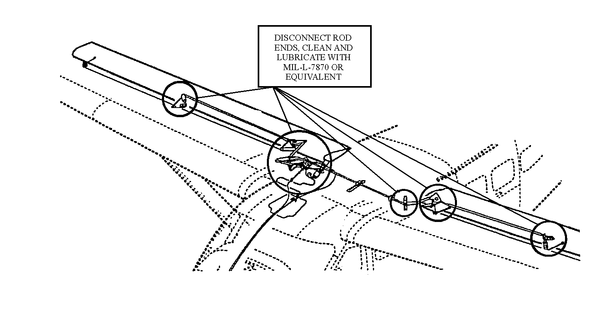
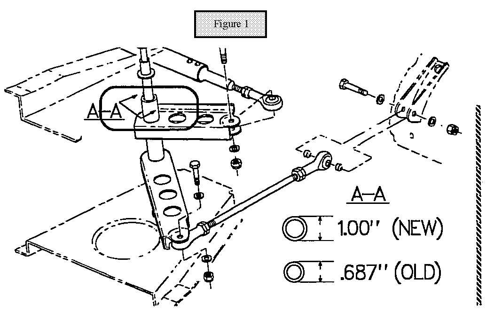

Servicing
Task: 122171
If aircraft operates in a seacoast environment, rod ends may require more frequent lubrication. When aircraft is washed or de-iced, rod ends may require lubrication.

Task: 122172
Beginning with aircraft serial number 20800161 and 208B0190 and aircraft modified per SNL89-17 have sealed pivot bearings installed and do not require lubrication. To identify these bellcranks, measure the bellcrank mount tube outside diameter (See A-A in Figure 1 below). The NEW style bellcrank tube is 1.00". The OLD style bellcrank tube outside diameter is 0.687" and MUST be removed for lubrication.

Task: 122174
- Wipe clean and spray lubricate with high quality silicon spray.
- Wipe off excess.
Task: 122176
- Wipe clean and lubricate with high quality silicon spray.
- Wipe off excess.
Task: 122177
- Disconnect pushrods, clean rod ends, inspect for condition, corrosion and pitting.
- Lubricate by hand using MIL-G-21164 grease or equivalent.
- Connect rod ends in accordance with the 208 Series Maintenance Manual, Chapter 27-10.